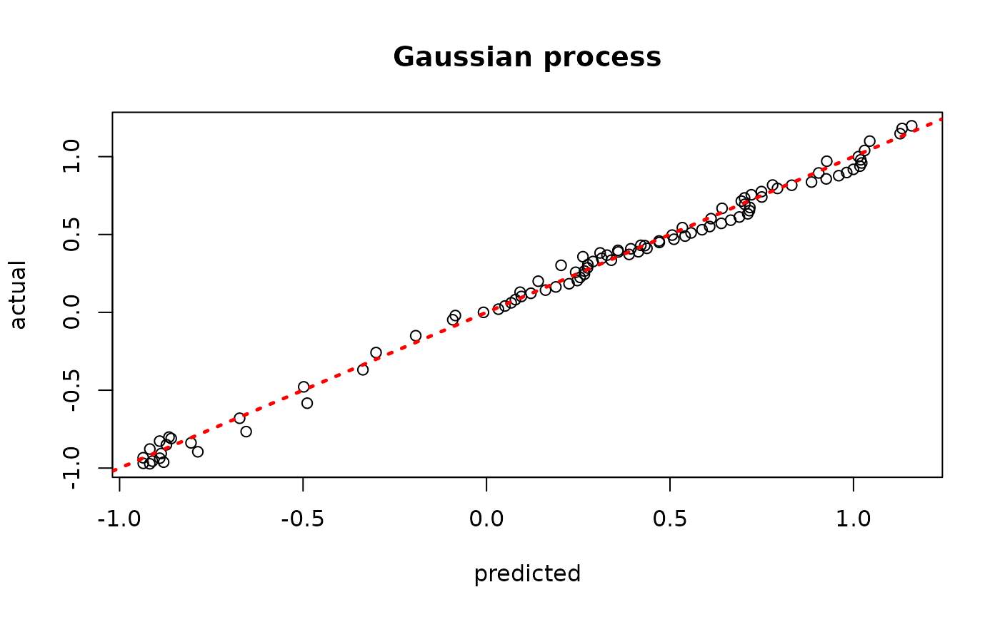
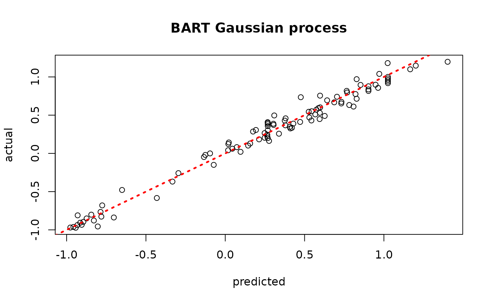
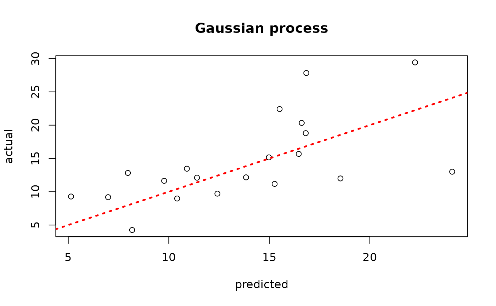
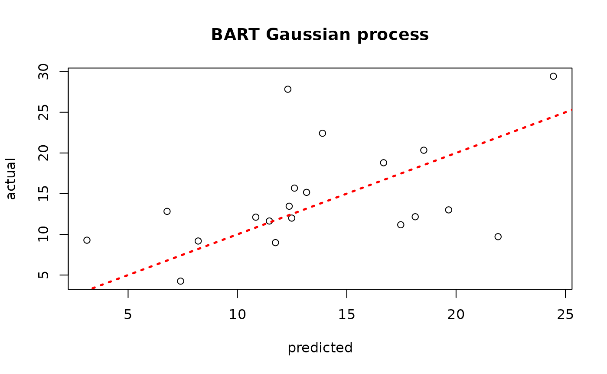

Kernel Methods from Tree Ensembles in StochTree#
Motivation#
A trained tree ensemble with strong out-of-sample performance admits a natural motivation for the “distance” between two samples: shared leaf membership. We number the leaves in an ensemble from 1 to \(s\) (that is, if tree 1 has 3 leaves, it reserves the numbers 1 - 3, and in turn if tree 2 has 5 leaves, it reserves the numbers 4 - 8 to label its leaves, and so on). For a dataset with \(n\) observations, we construct the matrix \(W\) as follows:
Initialize\(W\)as a matrix of all zeroes with\(n\)rows and as many
columns as leaves in the ensemble
Let s = 0
FOR\(j\)IN\(\left\{ 1,\ldots,m \right\}\):
Let num_leaves be the number of leaves in tree\(j\)
FOR\(i\)IN\(\left\{ 1,\ldots,n \right\}\):
Let k be the leaf to which tree\(j\)maps observation\(i\)
Set element\(W_{i,k + s} = 1\)
Let s = s + num_leaves
This sparse matrix \(W\) is a matrix representation of the basis predictions of an ensemble (i.e. integrating out the leaf parameters and just analyzing the leaf indices). For an ensemble with \(m\) trees, we can determine the proportion of trees that map each observation to the same leaf by computing \(WW^{T}/m\). This can form the basis for a kernel function used in a Gaussian process regression, as we demonstrate below.
To begin, load the stochtree package and the tgp package which will
serve as a point of reference.
Demo 1: Univariate Supervised Learning#
We begin with a simulated example from the tgp package (Gramacy and
Taddy (2010)). This data generating process (DGP) is non-stationary with
a single numeric covariate. We define a training set and test set and
evaluate various approaches to modeling the out of sample outcome data.
Traditional Gaussian Process#
We can use the tgp package to model this data with a classical
Gaussian Process.
# Generate the data
X_train <- seq(0,20,length=100)
X_test <- seq(0,20,length=99)
y_train <- (sin(pi*X_train/5) + 0.2*cos(4*pi*X_train/5)) * (X_train <= 9.6)
lin_train <- X_train>9.6;
y_train[lin_train] <- -1 + X_train[lin_train]/10
y_train <- y_train + rnorm(length(y_train), sd=0.1)
y_test <- (sin(pi*X_test/5) + 0.2*cos(4*pi*X_test/5)) * (X_test <= 9.6)
lin_test <- X_test>9.6;
y_test[lin_test] <- -1 + X_test[lin_test]/10
# Fit the GP
model_gp <- bgp(X=X_train, Z=y_train, XX=X_test)
plot(model_gp$ZZ.mean, y_test, xlab = "predicted", ylab = "actual", main = "Gaussian process")
abline(0,1,lwd=2.5,lty=3,col="red")

Assess the RMSE
BART-based Gaussian process#
# Run BART on the data
num_trees <- 200
sigma_leaf <- 1/num_trees
X_train <- as.data.frame(X_train)
X_test <- as.data.frame(X_test)
colnames(X_train) <- colnames(X_test) <- "x1"
mean_forest_params <- list(num_trees=num_trees, sigma2_leaf_init=sigma_leaf)
bart_model <- bart(X_train=X_train, y_train=y_train, X_test=X_test, mean_forest_params = mean_forest_params)
# Extract kernels needed for kriging
leaf_mat_train <- computeForestLeafIndices(bart_model, X_train, forest_type = "mean",
forest_inds = bart_model$model_params$num_samples - 1)
leaf_mat_test <- computeForestLeafIndices(bart_model, X_test, forest_type = "mean",
forest_inds = bart_model$model_params$num_samples - 1)
W_train <- sparseMatrix(i=rep(1:length(y_train),num_trees), j=leaf_mat_train + 1, x=1)
W_test <- sparseMatrix(i=rep(1:length(y_test),num_trees), j=leaf_mat_test + 1, x=1)
Sigma_11 <- tcrossprod(W_test) / num_trees
Sigma_12 <- tcrossprod(W_test, W_train) / num_trees
Sigma_22 <- tcrossprod(W_train) / num_trees
Sigma_22_inv <- ginv(as.matrix(Sigma_22))
Sigma_21 <- t(Sigma_12)
# Compute mean and covariance for the test set posterior
mu_tilde <- Sigma_12 %*% Sigma_22_inv %*% y_train
Sigma_tilde <- as.matrix((sigma_leaf)*(Sigma_11 - Sigma_12 %*% Sigma_22_inv %*% Sigma_21))
# Sample from f(X_test) | X_test, X_train, f(X_train)
gp_samples <- mvtnorm::rmvnorm(1000, mean = mu_tilde, sigma = Sigma_tilde)
# Compute posterior mean predictions for f(X_test)
yhat_mean_test <- colMeans(gp_samples)
plot(yhat_mean_test, y_test, xlab = "predicted", ylab = "actual", main = "BART Gaussian process")
abline(0,1,lwd=2.5,lty=3,col="red")

Assess the RMSE
Demo 2: Multivariate Supervised Learning#
We proceed to the simulated “Friedman” dataset, as implemented in tgp.
Traditional Gaussian Process#
We can use the tgp package to model this data with a classical
Gaussian Process.
# Generate the data, add many "noise variables"
n <- 100
friedman.df <- friedman.1.data(n=n)
train_inds <- sort(sample(1:n, floor(0.8*n), replace = FALSE))
test_inds <- (1:n)[!((1:n) %in% train_inds)]
X <- as.matrix(friedman.df)[,1:10]
X <- cbind(X, matrix(runif(n*10), ncol = 10))
y <- as.matrix(friedman.df)[,12] + rnorm(n,0,1)*(sd(as.matrix(friedman.df)[,11])/2)
X_train <- X[train_inds,]
X_test <- X[test_inds,]
y_train <- y[train_inds]
y_test <- y[test_inds]
# Fit the GP
model_gp <- bgp(X=X_train, Z=y_train, XX=X_test)
plot(model_gp$ZZ.mean, y_test, xlab = "predicted", ylab = "actual", main = "Gaussian process")
abline(0,1,lwd=2.5,lty=3,col="red")

Assess the RMSE
BART-based Gaussian process#
# Run BART on the data
num_trees <- 200
sigma_leaf <- 1/num_trees
X_train <- as.data.frame(X_train)
X_test <- as.data.frame(X_test)
mean_forest_params <- list(num_trees=num_trees, sigma2_leaf_init=sigma_leaf)
bart_model <- bart(X_train=X_train, y_train=y_train, X_test=X_test, mean_forest_params = mean_forest_params)
# Extract kernels needed for kriging
leaf_mat_train <- computeForestLeafIndices(bart_model, X_train, forest_type = "mean",
forest_inds = bart_model$model_params$num_samples - 1)
leaf_mat_test <- computeForestLeafIndices(bart_model, X_test, forest_type = "mean",
forest_inds = bart_model$model_params$num_samples - 1)
W_train <- sparseMatrix(i=rep(1:length(y_train),num_trees), j=leaf_mat_train + 1, x=1)
W_test <- sparseMatrix(i=rep(1:length(y_test),num_trees), j=leaf_mat_test + 1, x=1)
Sigma_11 <- tcrossprod(W_test) / num_trees
Sigma_12 <- tcrossprod(W_test, W_train) / num_trees
Sigma_22 <- tcrossprod(W_train) / num_trees
Sigma_22_inv <- ginv(as.matrix(Sigma_22))
Sigma_21 <- t(Sigma_12)
# Compute mean and covariance for the test set posterior
mu_tilde <- Sigma_12 %*% Sigma_22_inv %*% y_train
Sigma_tilde <- as.matrix((sigma_leaf)*(Sigma_11 - Sigma_12 %*% Sigma_22_inv %*% Sigma_21))
# Sample from f(X_test) | X_test, X_train, f(X_train)
gp_samples <- mvtnorm::rmvnorm(1000, mean = mu_tilde, sigma = Sigma_tilde)
# Compute posterior mean predictions for f(X_test)
yhat_mean_test <- colMeans(gp_samples)
plot(yhat_mean_test, y_test, xlab = "predicted", ylab = "actual", main = "BART Gaussian process")
abline(0,1,lwd=2.5,lty=3,col="red")

Assess the RMSE
While the use case of a BART kernel for classical kriging is perhaps unclear without more empirical investigation, we will see in a later vignette that the kernel approach can be very beneficial for causal inference applications.
References#
Gramacy, Robert B., and Matthew Taddy. 2010. “Categorical Inputs, Sensitivity Analysis, Optimization and Importance Tempering with tgp Version 2, an R Package for Treed Gaussian Process Models.” Journal of Statistical Software 33 (6): 1–48. https://doi.org/10.18637/jss.v033.i06.